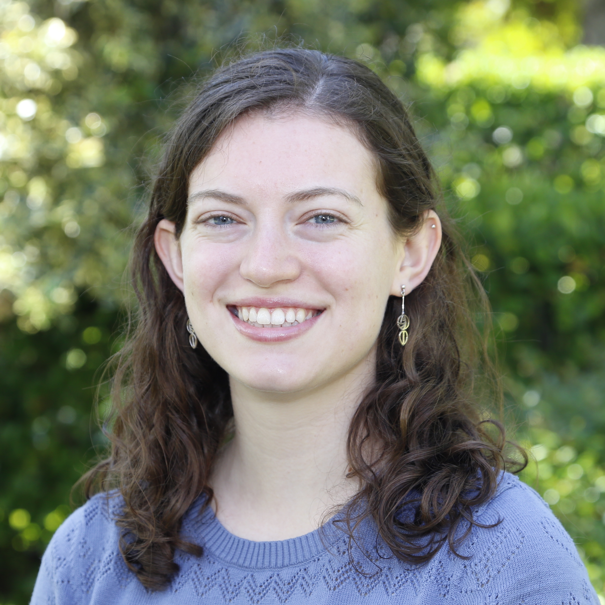

Hi, I’m Clare Singer
PhD Candidate at Caltech
Welcome to my website! I'm a 5th (final) year PhD student at Caltech in the
Department of
Environmental Science and Engineering.
I work with Dr. Tapio Schneider studying boundary layer clouds and
their role in the climate system. You can check out my
research page
to learn more about my projects.
I am broadly interested in the climate system.
I have previously worked on the role of convection and monsoons in
troposphere-stratosphere exchange of trace atmospheric constituents like water vapor.
Currently, I study how clouds regulate Earth's climate and how they are
responding to climate change.
I use pencil-and-paper theory, high-resolution models, and satellite
observations in my research.
In my free time, you can often find me hiking in the San Gabriel mountains.
